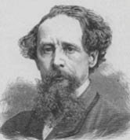

(1812 – 1870)

O zamanlar, romanların (şimdiki TV dizileri gibi) haftalık olarak piyasaya çıktığı günlerdi. İnsanlar en heyecanlı yerinde kesilmiş romanın devamını okuyabilmek için romanın yayımlandığı derginin piyasaya çıkmasını dört gözle beklerlerdi ve Charles Dickens o zamanların en çok satan romancılarından biriydi, bugünlerinse en sevilen klasik romancılarından biri...
Tam adı Charles John Huffam Dickens olan yazar Charles Dickens (okunuşu: Çarls Dikıns), 1812 yılında John ve Elizabeth Dickens'ın oğlu olarak Portsmouth'ta dünyaya geldi. Küçük yaşta büyük maddi zorluklarla karşılaşan Dickens, on bir yaşına geldiğinde bir boya fabrikasında ağır koşullar altında çalışmak zorunda kaldı. Babası borçları yüzünden zaman zaman hapse bile giren küçük bir memurdu. Çocukluk ve gençlik yıllarının büyük bir bölümünü çeşitli işlerde çalışarak geçirdi. Babası hapisten çıktıktan sonra beklenmedik bir mirastan dolayı ailenin yazgısı değişti. Dickens, fabrikadan alınarak bir okula gönderildi. Ailenin maddi durumu bozulunca yeniden okulu bıraktı ve bir avukatın yanına girdi. Stenografi öğrenerek mahkemelerde ve parlamentoda muhabirlik yaptı. Dönemin çeşitli gazete ve dergilerine deneme ve öyküler yazmaya başladı. Bu yazılarında dönemin geleneklerinden ve yaşam biçiminden kesitler yer alıyordu. İlgiyle karşılanan bu yazılar George Cruikshank'ın çizgileriyle "Boz'un Karalamaları" (1836) adıyla yayımlandı. Dickens daha sonra Bay Pickwick'in Serüvenleri'ni (1836-37)yazmaya başladı. Bay Pickwick, uşağı Sam Weller ve arkadaşlarının başından geçen gülünç serüvenleri anlatan bu kitap çok tutuldu ve Dickens birdenbire üne kavuştu.
Dickens'ın herkesçe anlaşılabilir romanları, yaşadığı dönemde kraliçeden sokaktaki yoksul adama kadar çeşitli kesimlerden okurların ilgisini çekiyordu. Londra'da kimi zaman yirmi tiyatroda birden bu romanlardan uyarlamalar sahneleniyor, okuması olmayanlar bile roman kahramanlarını tanıyordu. Romanlarındaki Bay Pickwick, Oliver Twist, Bay Micawber, David Copperfield, Scrooge ve Tiny Tim gibi tipler, İngiltere'nin dışındaki okurlarca da benimsendi.
1829 yılında, ilk aşkı Maria Beandel ile tanıştı ve onu "David Copperfield"daki Dora karakteri için uygun bir model olarak gördü. Ancak Maria'nın ailesi bu birlikteliği onaylamadı ve 1833'te ayrılmak zorunda kaldılar. Yazar, daha sonraları 1835 yılında Catherine Hogarth'la nişanlandı.
Dickens 1837'de Catherine Hogart ile evlendi. Bu tarihten itibaren Dickens hem dergilere deneme öykü yazmayı sürdürdü hem de (o zamanların modasına uygun olarak) dergilerde dizi halinde yayımlanan romanlar yazmaya başladı. 1838-39 arasında gene bölümler halinde yayımlanan Nicholas Nickleby'de gülünç ve acıklı olayları iç içe vermeyi başardı. Bu kitapta, yarattığı en gülünç tiplerden Bay Mantalini ve Bay Vincent Crummles ile birlikte canavar ruhlu okul yöneticisi Wackford Squeers'i de okurlarına tanıttı.
Charles Dickens 1840'ta Amerika'ya gitti ve burada büyük bir coşkuyla karşılandı, ama dönüşünde yazdığı "Genel Okur İçin Amerika Notları" kendisini içtenlikle ağırlamış olanlarda şiddetli tepkilere yol açtı. Aslında Amerika'ya gidişinin asıl nedeni yazdıklarını izinsiz kopyalayan Amerikalı bazı yayınevlerine dava açmak ve köleliğin kaldırılması yolunda yapılan gösterilere destek olmaktı. Bir Noel Şarkısı (1843) ve Martin Chuzzlewit (1844) bu geziden edindiği izlenimlerle yazıldı.
Küçük Nell'in ölümüyle sonuçlanan Antikacı Dükkanı (1841) okurları gözyaşlarına boğdu. Okurlar, Dickens'a mektuplar yazarak Küçük Nell'in ölmesini engellemesi için yalvardılar. 1843 ile 1846 arasında bol bol seyahat eden Dickens, bu seyahatlerde dönemin ünlü yazarlarıyla tanışma fırsatı buldu. Bu dönemde yine Daily News gazetesini ve Household Words dergisini çıkardı. Dickens iş dünyasını ve bütünüyle toplumu ele aldığı "Dombey ve Oğlu" (1848) adlı romanının ardından, bir özyaşamöyküsünü çağrıştıran "David Copperfield"ı (1849-50) yazmaya başladı. David Copperfield'in başından geçenler, çoğunlukla Dickens'ın fabrikadaki karanlık günlerinden, yoksul kira evlerinden ve borçlular hapishanesinden izlenimlerdi. "Kasvetli Ev" (1853) adlı romanında mahkemeleri ve hukukçuları; "Zor Yıllar"da (1854) Sanayi Devrimi'yle birlikte yaşanan toplumsal değişim sırasında sıkıntı ve yoksulluğa neden olan iktisadi sistemi sert bir dille eleştirdi. Dickens toplumun yoksul ve ezilen kesimlerini konu aldığı romanlarıyla geniş yankılar uyandırarak, toplumsal sorunlara ilginin artmasını sağladı. 1857 yılında Hans Christian Andersen Dickens'ı ziyarete geldi ve aynı yıl Dickens eski dostu ve rakibi William Makepeace Thackeray ile edebi bir polemik yaşadı. Ertesi yıl eşinden ayrılan yazar, Ellen Ternan adında bir oyuncuyla birlikte yaşamaya başladı.
Dickens Küçük Dorrit (1857) adlı romanının ardından Sıradan Sözler ve Yıl Boyunca adlı dergilerde çalıştı. 1859'dan 1870'teki ölümüne kadar roman, şiir, deneme gibi çeşitli türlere yer veren bu haftalık dergilerde çalışan Dickens bu sırada üç roman daha yazdı; İki Şehrin Hikayesi (1859) Büyük Umutlar (1861) ve Ortak Dostumuz (1865) adlı bu yapıtlarıyla sanatının doruğuna ulaştı.
1858'de boşandıktan sonra Dickens, ABD'ye ve İngiltere'nin çeşitli bölgelerine geziler yaptı. Büyük dinleyici kitlelerine romanlarından parçalar okumakta çok ustaydı. Halkın arasına karışmaktan hoşlanırdı. Etkileyici bir konuşmacı, iyi bir amatör tiyatro oyuncusu, yetenekli bir gazete muhabiriydi. Yazmakta olduğu Edwin Drood'un Gizemi (1870) adlı dedektif öyküsünü bitiremeden 8 Haziran1870 tarihinde öldü ve Gadshill'de toprağa verildi.
Seçme Romanları: Oliver Twist (1837/1839 – Can Yayınları, 2010), Nicholas Nickleby'nin Hayatı ve Serüvenleri (1838–1839), Antikacı Dükkanı (1840 – Amfora Yayınları, 2007), Bir Noel Şarkısı (1843), Martin Chuzzlewit (1843–1844), Yaşama Savaşı (1846), David Copperfield (1849/1850 – Engin Yayıncılık, 2000), Zor Günler (1854), İki Şehrin Hikayesi (1859 – Can Yayınları, 2012), Büyük Umutlar (1860/1861 – Alter Yayıncılık, 2011), Edwin Drood'un Gizemi (tamamlanamadı – 1870)